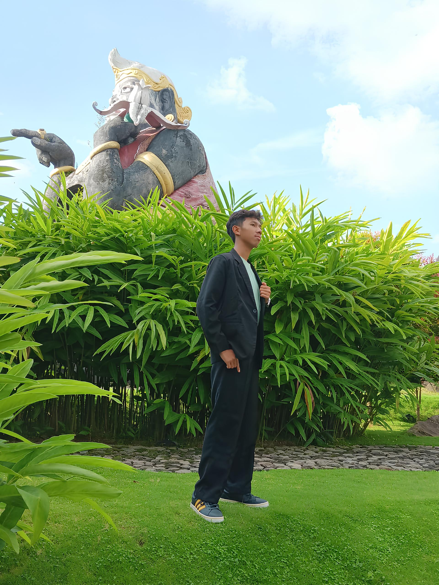
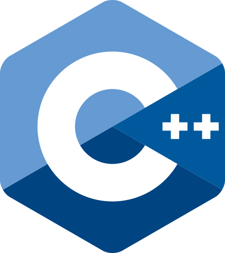
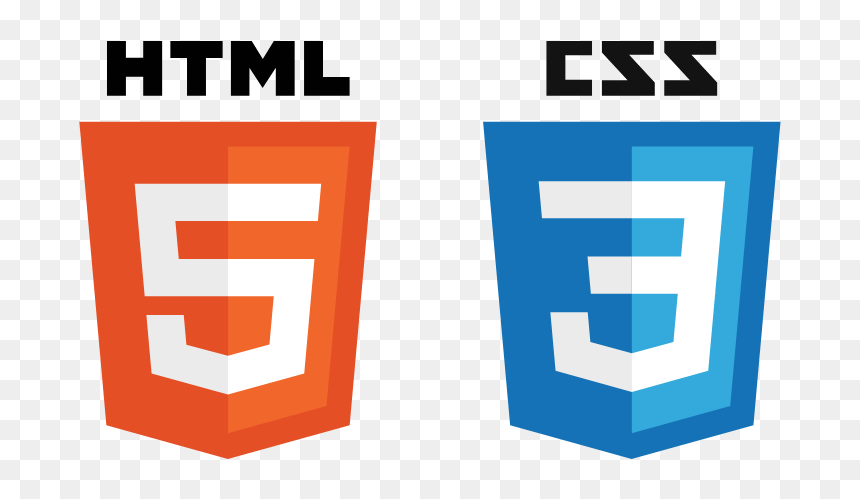
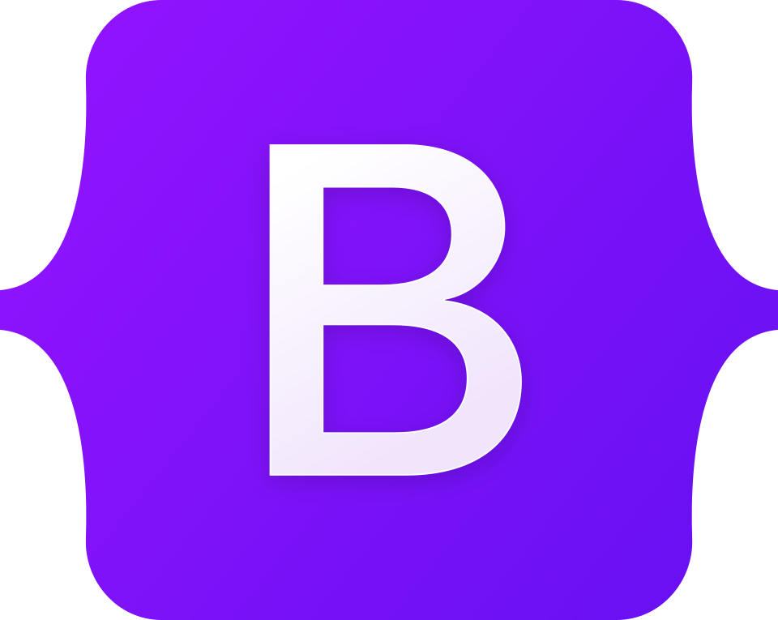
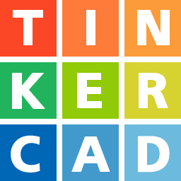
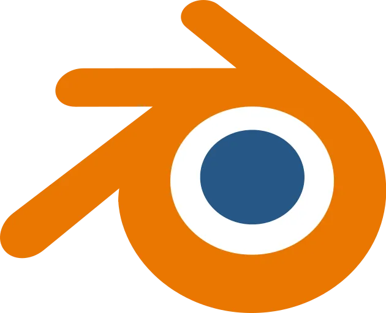
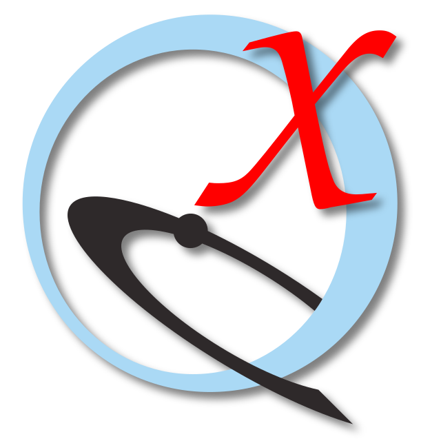

Tegar Wardana
I'm an Aspiring Computer Engineer
About
Bridging low-level system efficiency, hardware constraints, and computational problem solving.

Computer Engineering & Embedded Systems
Driven by curiosity about how machines interact with physical reality, guided by the philosophy that practical engineering must solve real-world constraints.
My journey began with an innate drive to understand computation beneath the screen abstractions. Rather than treating hardware as an unconstrained resource, I focus on deliberate physical boundaries: thermal limits, memory envelopes, and deterministic execution loops.
This mindset directs my focus toward embedded systems, low-level OS tuning, and algorithmic efficiency in C++. By optimizing minimal Unix environments and telemetry logic on constrained microcontrollers, I treat software discipline as the primary tool to counteract hardware obsolescence.
Beyond computing, my work intersects with hardware automation and sensor-actuator design, aiming to bridge theoretical algorithms with measurable physical interventions.
Problems Solved Algorithmic & competitive programming tasks
System Prototypes Software, IoT, & Hardware Integration
Training Hours Structured IT & STEM tracks Training Certification
Competitions & Research Science olympiads & research initiatives
Skills & Technologies
Core programming languages, embedded platforms, and computational modeling tools utilized in my research and engineering projects.

C++
Python
Arduino

HTML & CSS

Bootstrap

Tinkercad

Blender
PyRx

UCSF ChimeraX
Resume
Academic background, competitive informatics record, and core engineering trajectory.
Summary
Lanang Tegar Augurio Wardana
Aspiring Computer Engineering scholar with a technical focus on embedded systems, C++ algorithmic efficiency, and hardware-software interaction. Dedicated to building reliable, low-level physical compute architectures.
- Bojonegoro, East Java, Indonesia
- waugurio@gmail.com
- github.com/waugurio
Education
Senior High School (MIPA)
2024 - 2027 (Expected)
SMA Negeri 1 Bojonegoro
Rigorous secondary education in natural sciences and advanced mathematics, combined with independent research in computational modeling and embedded electronics.
Honors & Competitions
National Science Olympiad (OSN-K) in Informatics
2026
SMA Negeri 1 Bojonegoro
Secured 3rd Place at the regency level, qualifying for the provincial selection round (OSN-P) in competitive programming and discrete mathematics.
National Science Olympiad (OSN-K & OSN-P) in Informatics
2025
SMA Negeri 1 Bojonegoro
Achieved 3rd Place at regency level and competed in the provincial informatics round, solving advanced dynamic programming and graph theory problem sets.
National Programming & Logic Competition (NPLC)
Participant / Finalist
National Level
Demonstrated structured problem-solving, arithmetic reasoning, and algorithmic logic implementation under competitive contest constraints.
Japan Youth Chemical & Tech Challenge (JYCC)
Competitor
International Track
Formulated interdisciplinary technical solutions bridging applied science, analytical calculations, and experimental verification.
Healthcare & Bio-Engineering Challenge (HBBC)
Participant
Innovation Track
Applied algorithmic and design logic toward solving biomedical instrumentation and micro-scale health delivery challenges.
Projects
Selected engineering systems, algorithmic tools, and technical research implementations.
- All
- Hardware
- Software
- Robotics
- Sustainable


Insights
Technical essays, architectural breakdowns, and research field notes.
Contact
Feel free to reach out for engineering inquiries, academic research collaborations, or technical discussions.